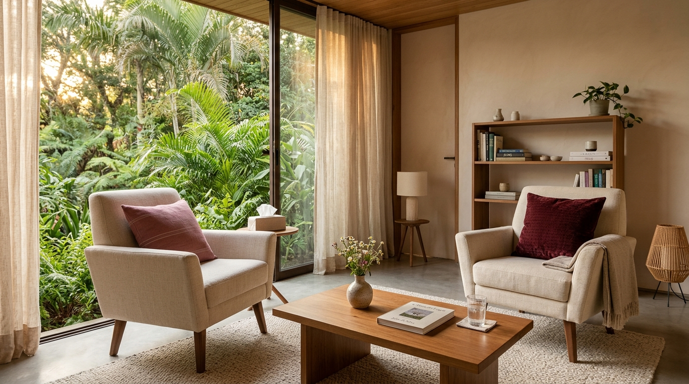

Toda relação conta uma história. Qual é a sua?
“Relações não se transformam quando alguém aprende a 'ganhar' uma discussão. Elas começam a mudar quando conseguimos compreender o que acontece entre as pessoas.”
Sou Natalie Thedim, psicóloga clínica (PUC-Rio, CRP 05/45482) com mais de 20 anos de experiência clínica. Ofereço um espaço seguro para compreender conflitos, fortalecer vínculos e transformar relações.
clínica dedicada
Como posso te ajudar?
Cada relação tem seu próprio universo. Escolha o que mais faz sentido para você agora.
Casamento e relacionamentos
Comunicação, ciúme, traição, dependência emocional, separação.
Família
Limites, famílias recompostas, pais idosos, conflitos entre gerações.
Filhos e educação
Autonomia, adolescência, escola, afeto e educação dos filhos.
Autoconhecimento
Apego, autoestima, luto, limites e a relação com você mesma(o).
Histórias reais, ditas com segurança
Um espaço vivo, alimentado por quem vive relações de verdade — sempre 100% anônimo, e revisado pela Natalie antes de qualquer publicação.
Histórias Reais
Relatos anônimos como "Estou casada há 27 anos e meu marido nunca conversa" ou "Meu filho de 14 anos só fica no quarto". Cada relato recebe uma reflexão em vídeo ou texto.
Cartas que Nunca Enviei
Para o marido, a esposa, o pai, a mãe, um filho, um ex, uma sogra — ou para você mesma(o). Sempre sem identificar ninguém.
Pergunte para Natalie
Uma caixa de perguntas permanente. Envie a sua dúvida e receba uma resposta em vídeo, áudio ou texto.
Diário Anônimo
Um mural coletivo de relatos curtos do dia a dia. Só para reagir, sem julgamento.
Mais de 20 anos ajudando pessoas e famílias a construírem relações mais saudáveis.
Psicóloga clínica especializada em Terapia de Casal e Família. Meu trabalho integra principalmente a Abordagem Sistêmica e a Psicanálise, buscando compreender não apenas o sintoma isolado, mas toda a história e o sistema no qual o sofrimento se manifesta.
Escuta sem julgamento
Um espaço seguro para falar sem precisar se defender.
Compreensão da história
Investigamos padrões que continuam influenciando o presente.
Compreensão do ciclo
Identificamos os gatilhos repetitivos na convivência a dois.
Construção de recursos
Desenvolvemos novas formas de comunicação e limites saudáveis.

Como funciona a jornada terapêutica
Clique nas etapas abaixo para explorar cada momento do processo clínico:
Na primeira sessão, criamos um ambiente ético, acolhedor e livre de julgamentos para compreender o momento atual sem buscar culpados.
Identificamos os padrões repetitivos de ataque, defesa ou silêncio e as heranças emocionais que cada pessoa traz de sua história familiar.
Desenvolvemos ferramentas reais de diálogo seguro, contorno emocional e posicionamento saudável na vida individual, conjugal e familiar.
Como posso caminhar com você?
Escolha o melhor dia e horário na agenda oficial do Doctoralia ou consulte os formatos de atendimento direto pelo WhatsApp.
Selecione seu dia e horário na agenda online
Consulte a disponibilidade em tempo real para psicoterapia individual ou de casal. Escolha o melhor formato e confirme sua consulta com agilidade.
Terapia Individual
Autoconhecimento e Transformação
Para quem busca autoconhecimento, equilíbrio emocional e deseja transformar padrões de apego e sofrimento.
- Adultos e adolescentes
- Questões emocionais e autoconhecimento
- Ansiedade, dependência afetiva e luto
Terapia de Casal
Diálogo, Intimidade e Resolução
Reconstruímos o diálogo, a intimidade e a parceria. Para casais que desejam superar conflitos e fortalecer a conexão.
- Comunicação assertiva e diálogo seguro
- Conflitos recorrentes e desgaste do dia a dia
- Reorganização da vida a dois e confiança
Consultório no Jardim Botânico, Zona Sul - Rio de Janeiro / RJ (e Atendimento Online para todo o Brasil e exterior)
Assista no Canal Oficial do YouTube
Reflexões aprofundadas e lives clínicas sobre casamento, transgeracionalidade, limites emocionais e vida em família.
Escolha um episódio para assistir aqui:
Como traumas, crenças e padrões emocionais atravessam gerações e como transformar esses ciclos na terapia.
“Eu preciso de um tempo para mim.” Entenda os três espaços essenciais de uma relação saudável: o eu, o você e o nós.
Não espere a crise se agravar: identifique os sinais precoces de desgaste na comunicação e no vínculo conjugal.
Explore a Revista Digital Completa
Dez espaços interativos de psicoeducação, escuta e reflexão sobre a vida a dois.